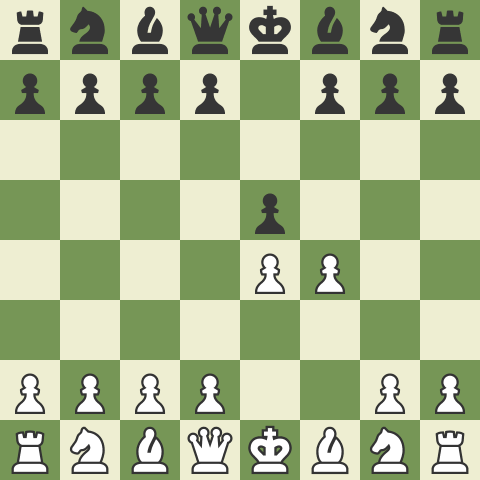

The King's Gambit is an aggresive and risky option for white that will typically end decisively for one side. Many of the top chess players avoid the opening due to its risky nature however for many amateur chess players, this is a fantastic weapon to throw opponents off.
Below is a list of some of the most important lines in the King's Gambit. They are divided into if black accepts or declines the gambit.